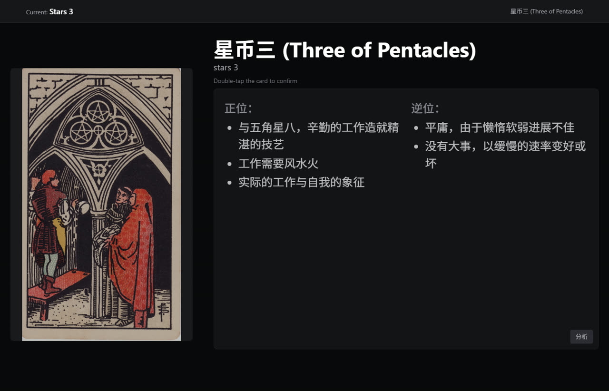
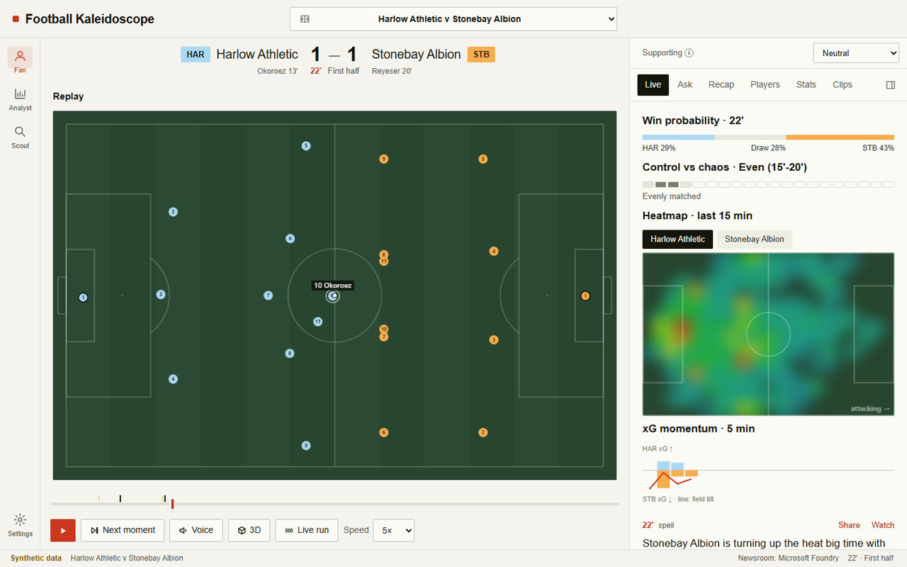
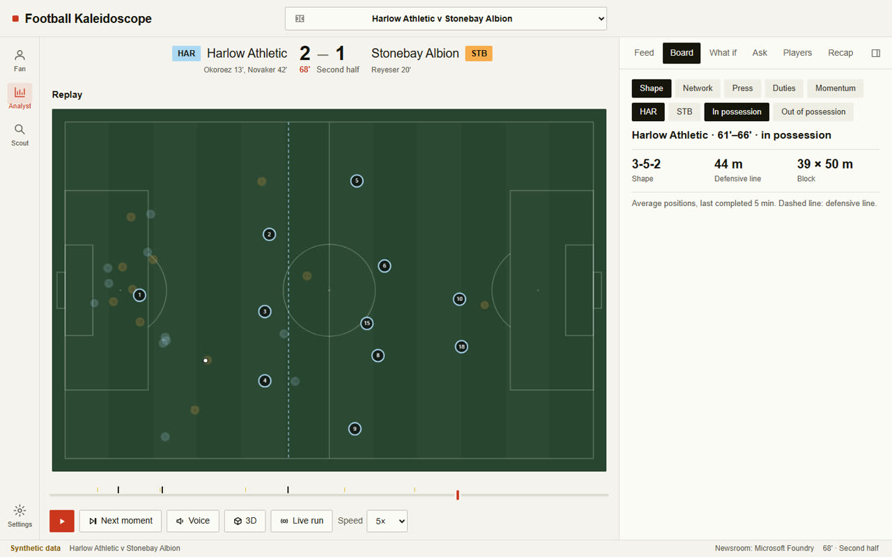
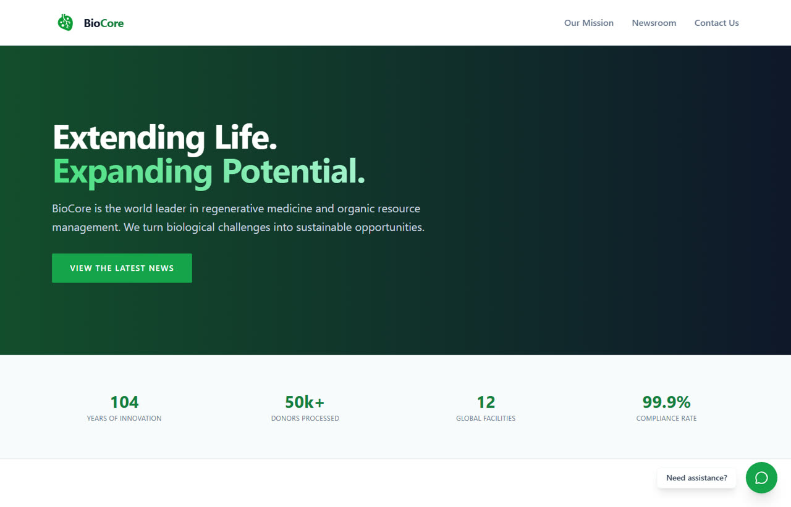
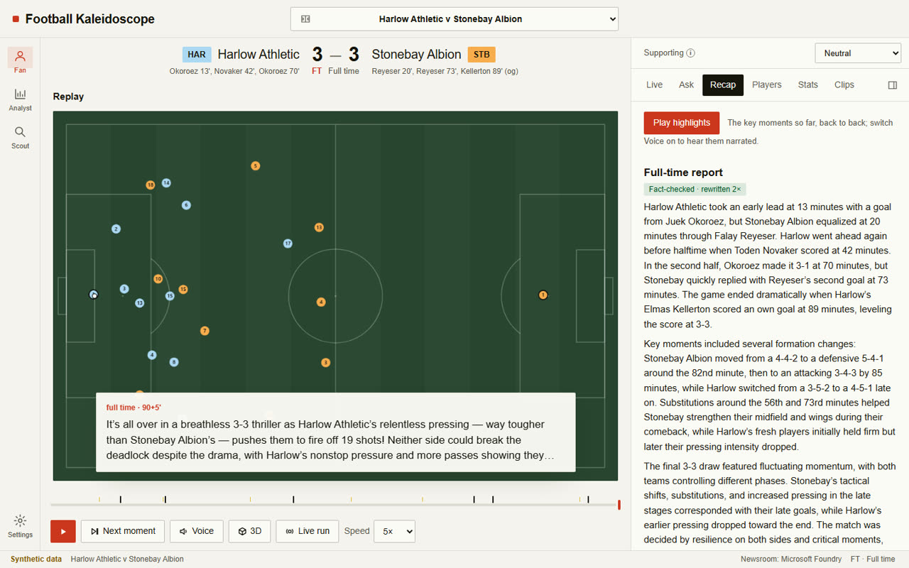
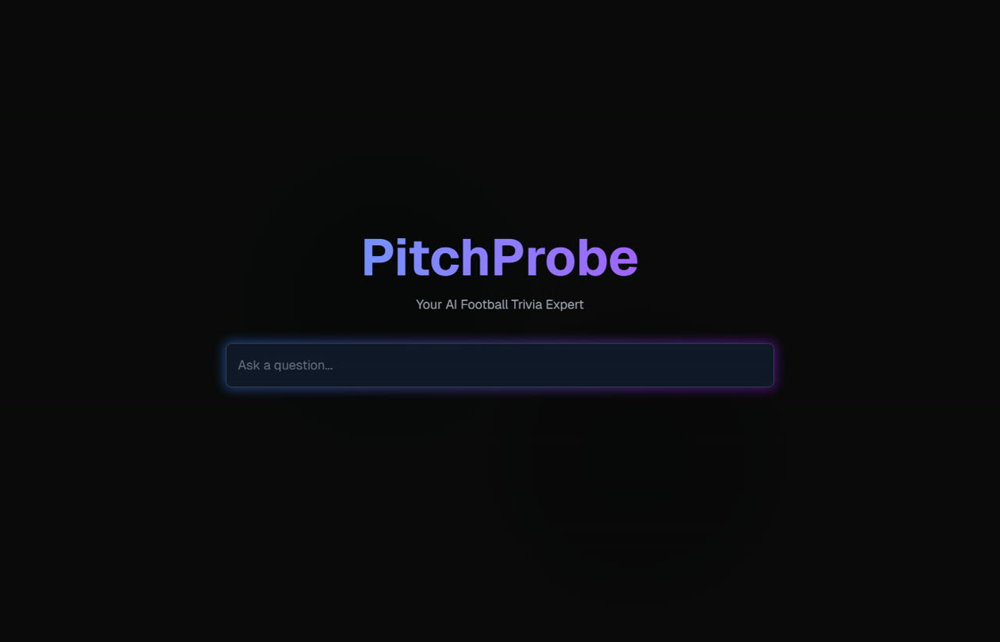

Singapore — 2026
Harbour Wang.
I build AI systems, computer vision, games and full-stack products — and the deterministic plumbing that keeps them honest.
- Study
- Computer Science, NUS
- Now
- Microsoft Inside the Game
- Status
- Open to internships
Scroll
Index
22 works- 01Football KaleidoscopeAn AI newsroom that explains a football matchAI & ML2026↗
- 02WuxiaAn LLM narrates; a deterministic engine owns the truthGames2026↗
- 03Ture AidOn-device assistant for criminal defence barristersAI & ML2026↗
- 04BioCore ARGA corporate site that stops pretendingWeb2026↗
- 05EchoForgeRealtime voice changing, with the latency argument written downAI & ML2026↗
- 06TRLPA travel planner that reasons over a graph it just builtAI & ML2026↗
- 07HuddleGroup streaming picks, ported to Amazon's Vega OSWeb2026↗
- 08PitchProbeFootball trivia answered by tools, not recallAI & ML2025↗
- 09Football Kit DetectorSix football kits, detected live on webcamAI & ML2025↗
- 10TravelPack DetectorFaster R-CNN over ten travel classesAI & ML2025↗
- 11CRNN CAPTCHA SolverSequence transcription with a custom CTC lossAI & ML2025↗
- 12BroadcastSelf-hosted screenshare with a studio mixerWeb2026↗
- 13Speed TarotA 78-card reference that respects your timeWeb2026↗
- 14Rogue RunOrbital Artemis · Judges' Choice AwardGames2024↗
- 15Pixel StuckTwo gadgets that rearrange the level itselfGames2025↗
- 16The AppraiserEvery placard either tells the truth or liesGames2026↗
- 17ELEGYA 115-card game and its print pipelineGames2026↗
- 18TETR.IO BotBoard reading by colour, search by multiprocessingGames2026↗
- 19World Cup Spotting SheetA broadcast lineup board, one command before kickoffSports2026↗
- 20Scouting ReelsTimestamped match moments into labelled clipsSports2025↗
- 21st-tg-bridgeTelegram into any OpenAI-compatible chatTools2026↗
- 22Alignment Vote AnalyzerReply-voting, classified by a modelTools2026↗
No works match that.
Evidence
Drag or scroll — 01/08





Colophon
Computer Science at the National University of Singapore, born in New Zealand, based in Singapore. My work sits where AI engineering meets product: LLM agents, computer vision, and the unglamorous plumbing that makes either of them usable.
Recently that has meant an AI newsroom that explains a football match, a realtime voice changer, and an on-device assistant for criminal defence barristers. Before that: YOLO detectors, an award-winning Unity roguelike, and a lot of Pygame.
I care about systems that hold up when the model is wrong — deterministic engines, ground-truth evaluation, and interfaces that tell you what is actually happening.
Languages
Python · TypeScript · Java · C# · Rust · C++
AI / ML
PyTorch · OpenCV · YOLO · LangGraph · LLM agents · RAG
Web / cloud
React · Next.js · Fastify · FastAPI · Postgres · AWS CDK
Games / tools
Unity · Godot · Pygame · Tauri · ffmpeg · Playwright
Contact
Let's build
something.